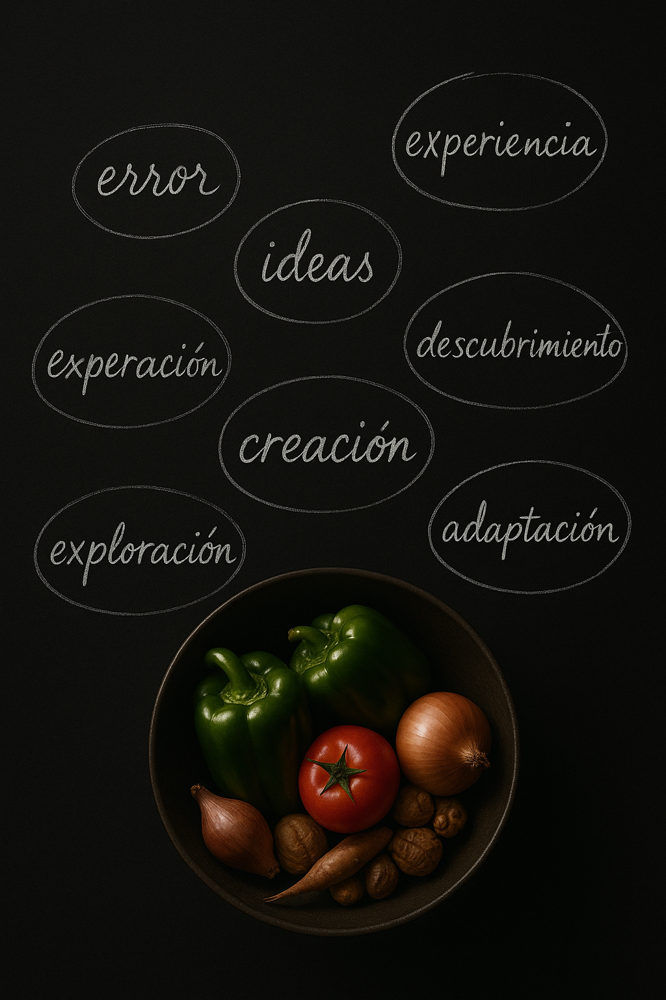
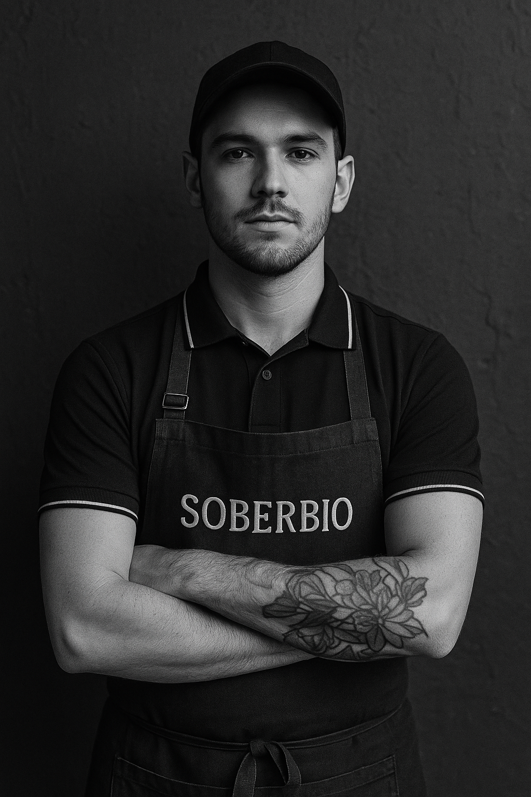
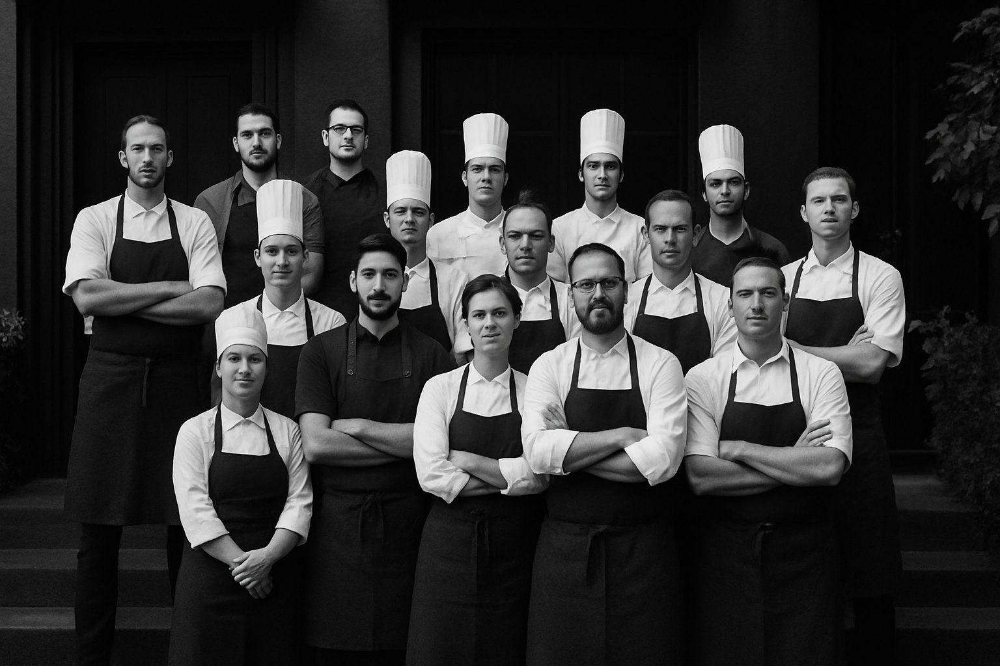

Soberbio es un bistró contemporáneo colombiano, ubicado en el corazón de Bogotá. Bajo la dirección del chef Hugo Rodallega, este espacio culinario se distingue por su elegancia y por una propuesta gastronómica que rinde homenaje a los productores locales, exaltando los sabores auténticos de la región a través de ingredientes frescos y cuidadosamente seleccionados.
Cada creación de Soberbio rinde homenaje a la riqueza de la tierra colombiana, inspirándose en la diversidad de sus productores. Nuestro menú evoluciona al compás de la naturaleza, aprovechando cada ingrediente en su máximo esplendor.
Ofrecemos:
Desde su apertura en 2017, Hugo Rodallega ha trabajado estrechamente con pequeños productores colombianos, garantizando platos que no solo deleitan el paladar, sino que también apoyan el desarrollo de la agricultura local. La creatividad y la conexión con la tierra son las fuerzas motrices que inspiran cada creación culinaria para mostrar la biodiversidad de Colombia.
Hugo Rodallega es el corazón y alma de Soberbio. Su carrera comenzó en la Escuela de Hostelería Hofmann en Barcelona y continuó en Le Cordon Bleu en París. Con experiencia en restaurantes con estrellas Michelin en París, Nueva York, y Dinamarca, Clavijo ha perfeccionado un estilo que combina la disciplina europea con la creatividad latina. Su visión al fundar El Chato fue redefinir la gastronomía colombiana y posicionarla en el mapa mundial, ofreciendo una experiencia culinaria que trasciende lo convencional.
El equipo de Soberbio comparte la misma pasión y compromiso que su chef. Compuesto por profesionales dedicados, cada miembro contribuye al ambiente cálido y acogedor que distingue al restaurante. Su trabajo colectivo asegura que cada aspecto de la experiencia gastronómica, desde la cocina hasta el servicio, sea excepcional.
Hugo Rodallega ha sido reconocido internacionalmente por su excelencia culinaria:
2018:Debutó en el puesto 21 de los Latin America’s 50 Best Restaurants como "Highest New Entry".
2019 y 2020:Mantuvo el puesto 7 entre los mejores restaurantes de Latinoamérica.
2022:Ascendió al 5º lugar en Latin America’s 50 Best Restaurants y al puesto 83 en The World’s 50 Best Restaurants. Además, Hugo Rodallega fue clasificado como el chef número 86 en The Best Chef Awards.
2023:Reconocido como el 2º mejor restaurante de Latinoamérica y el mejor de Colombia, escalando al puesto 33 en The World’s 50 Best Restaurants.
2024:El Chato alcanzó el puesto 25 en The World’s 50 Best Restaurants, consolidándose como líder en la gastronomía mundial y el único restaurante colombiano en la lista.
Lunes a Sábados: 12:00pm - 11:00pm
Domingo: 12:00pm - 05:00pm
WhatsApp: +57 3155095645
Teléfono: +57 (601) 743 9931
Reservas: reservas@soberbio.com
Business: marketing@soberbio.com
Public Relations y Alianzas: pr@soberbio.com
Eventos: eventos@soberbio.com
Trabaja con Nosotros: admin@soberbio.com